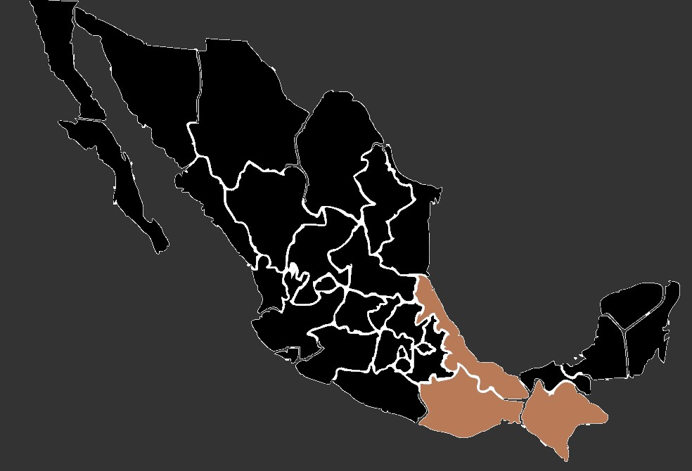

La polilla africana, específicamente la polilla de la seda africana, es una especie fascinante.
Tamaño: La polilla africana tiene un tamaño considerable, siendo una de las especies de polillas más grandes. Sus alas pueden alcanzar entre 10 y 15 centímetros de envergadura, lo que las convierte en insectos imponentes y visibles.
Color: Las alas de la polilla de la seda africana suelen tener colores terrosos, marrones o grises. A menudo presentan patrones intrincados y variados, con líneas o marcas más claras que contrastan con el fondo oscuro, brindando camuflaje durante su reposo.
Antenas: Poseen antenas plumosas que pueden ser largas y llamativas, utilizadas para detectar feromonas y rastrear a sus parejas para la reproducción. Su cabeza suele ser pequeña en proporción al tamaño de su cuerpo, con grandes ojos facetados que les proporcionan una excelente visión nocturna.
Cuerpo: La polilla africana tiene un cuerpo robusto y segmentado, con tres partes distintas: cabeza, tórax y abdomen. En su fase adulta, su abdomen suele ser grande y redondeado, debido a la acumulación de grasa y nutrientes para el período de apareamiento y puesta de huevos.
Tamaño: La polilla africana tiene un tamaño considerable, siendo una de las especies de polillas más grandes. Sus alas pueden alcanzar entre 10 y 15 centímetros de envergadura, lo que las convierte en insectos imponentes y visibles.
Color: Las alas de la polilla de la seda africana suelen tener colores terrosos, marrones o grises. A menudo presentan patrones intrincados y variados, con líneas o marcas más claras que contrastan con el fondo oscuro, brindando camuflaje durante su reposo.
Antenas: Poseen antenas plumosas que pueden ser largas y llamativas, utilizadas para detectar feromonas y rastrear a sus parejas para la reproducción. Su cabeza suele ser pequeña en proporción al tamaño de su cuerpo, con grandes ojos facetados que les proporcionan una excelente visión nocturna.
Cuerpo: La polilla africana tiene un cuerpo robusto y segmentado, con tres partes distintas: cabeza, tórax y abdomen. En su fase adulta, su abdomen suele ser grande y redondeado, debido a la acumulación de grasa y nutrientes para el período de apareamiento y puesta de huevos.
La polilla de la seda africana tiene un hábitat y comportamiento específico que se relaciona estrechamente con su ciclo de vida y adaptaciones.
La polilla africana prefiere hábitats con una vegetación densa y diversa, típicamente presentes en los bosques tropicales y subtropicales. Pueden encontrarse en áreas de selvas tropicales húmedas, así como en bosques de montaña con vegetación exuberante.
Estas polillas dependen de árboles específicos para su alimentación y reproducción. Suelen habitar en áreas donde se encuentran los árboles que les sirven de huéspedes para depositar sus huevos. Se alimentan típicamente de plantas como eucaliptos, sauces, árboles frutales y diversas especies de plantas leñosas. En cuanto a su presencia en México, su distribución se encuentra principalmente en regiones cálidas y tropicales, aunque es importante tener en cuenta que su distribución puede variar y no se encuentra en todos los estados mexicanos. Sin embargo, puede estar presente en estados como Chiapas, Veracruz, Oaxaca y algunas zonas de la región sur.
La polilla africana prefiere hábitats con una vegetación densa y diversa, típicamente presentes en los bosques tropicales y subtropicales. Pueden encontrarse en áreas de selvas tropicales húmedas, así como en bosques de montaña con vegetación exuberante.
Estas polillas dependen de árboles específicos para su alimentación y reproducción. Suelen habitar en áreas donde se encuentran los árboles que les sirven de huéspedes para depositar sus huevos. Se alimentan típicamente de plantas como eucaliptos, sauces, árboles frutales y diversas especies de plantas leñosas. En cuanto a su presencia en México, su distribución se encuentra principalmente en regiones cálidas y tropicales, aunque es importante tener en cuenta que su distribución puede variar y no se encuentra en todos los estados mexicanos. Sin embargo, puede estar presente en estados como Chiapas, Veracruz, Oaxaca y algunas zonas de la región sur.
Durante su fase larval, las orugas de la polilla africana se alimentan de hojas de árboles específicos que sirven como sus plantas hospederas. Consumen grandes cantidades de follaje de árboles como eucaliptos, sauces, árboles frutales y otras especies de plantas leñosas que les proporcionan los nutrientes necesarios para su crecimiento.
Una vez que emergen como polillas adultas, su principal enfoque ya no es alimentarse, sino más bien reproducirse. Las polillas adultas pueden tomar pequeñas cantidades de néctar de flores para obtener energía, pero su sistema digestivo está menos desarrollado en esta etapa, por lo que no dependen en gran medida de la alimentación.
Una vez que emergen como polillas adultas, su principal enfoque ya no es alimentarse, sino más bien reproducirse. Las polillas adultas pueden tomar pequeñas cantidades de néctar de flores para obtener energía, pero su sistema digestivo está menos desarrollado en esta etapa, por lo que no dependen en gran medida de la alimentación.
• Las larvas de la polilla africana tejen capullos de seda particularmente resistentes y gruesos. Estos capullos son lo suficientemente densos como para proteger a las crisálidas durante su transformación en polillas adultas, siendo utilizados por algunas comunidades locales para la fabricación de textiles y artesanías.
•Son una de las especies de polillas más grandes, con una envergadura que puede alcanzar hasta 15 centímetros. Su tamaño y apariencia llamativa, junto con sus patrones en las alas, las convierten en un espectáculo impresionante cuando están en vuelo.
•El contacto con las escamas o el polvo de las alas y cuerpos de estas polillas puede causar reacciones alérgicas en algunas personas sensibles, como irritación en la piel o problemas respiratorios.
•Las larvas de la polilla de la seda africana tienen una dieta muy específica y se alimentan exclusivamente de ciertas especies de plantas hospederas, lo que las hace dependientes de la disponibilidad de estas plantas para su subsistencia.
•Son una de las especies de polillas más grandes, con una envergadura que puede alcanzar hasta 15 centímetros. Su tamaño y apariencia llamativa, junto con sus patrones en las alas, las convierten en un espectáculo impresionante cuando están en vuelo.
•El contacto con las escamas o el polvo de las alas y cuerpos de estas polillas puede causar reacciones alérgicas en algunas personas sensibles, como irritación en la piel o problemas respiratorios.
•Las larvas de la polilla de la seda africana tienen una dieta muy específica y se alimentan exclusivamente de ciertas especies de plantas hospederas, lo que las hace dependientes de la disponibilidad de estas plantas para su subsistencia.